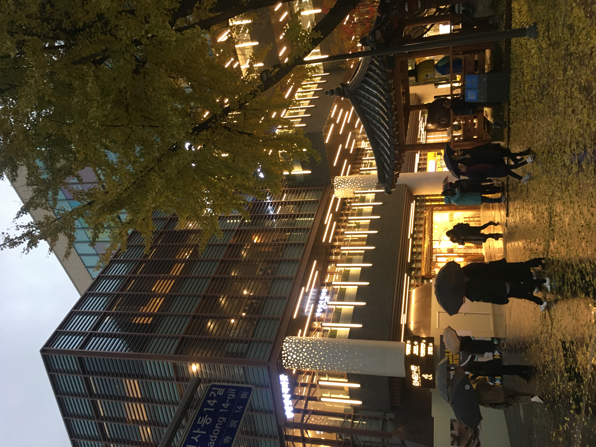
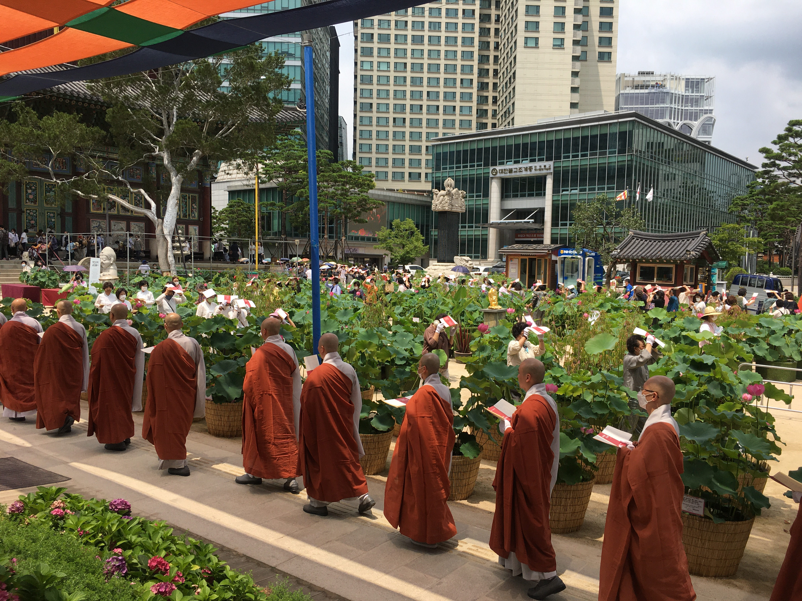
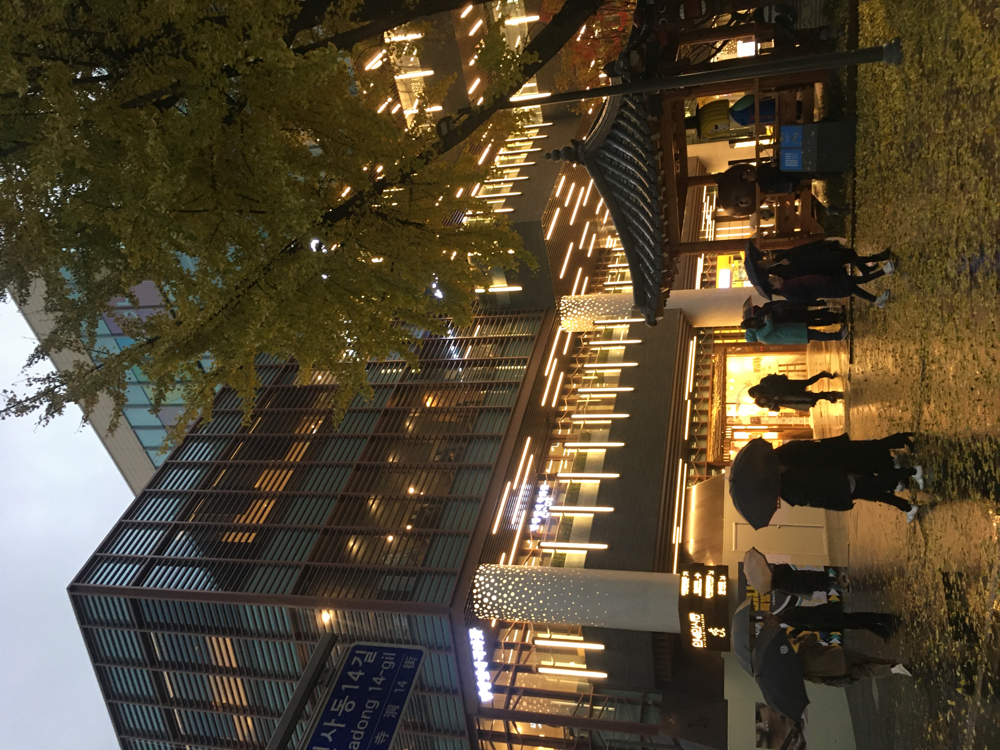
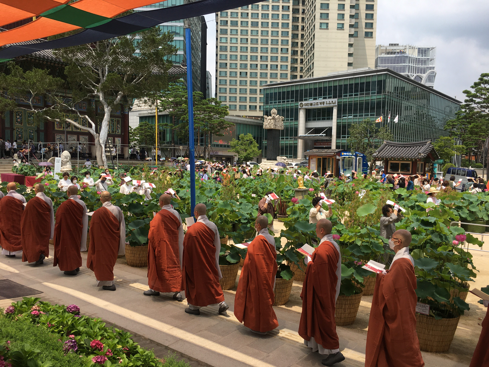

I want to share some of my favorite sceneries and places in Seoul. I came from South Korea. Even though I did not live in Seoul, I spent majority of my 20s in Seoul for studying and working. I highly recommend eating all types of Korean food (including street food) and visit hidden local and old alleys around the city. I also recommend staying at a traditional Korean housing hotel for a few days – you will have to sleep on a hard but scientifically warm floor (it’s very good for your low back).
Photos
 


